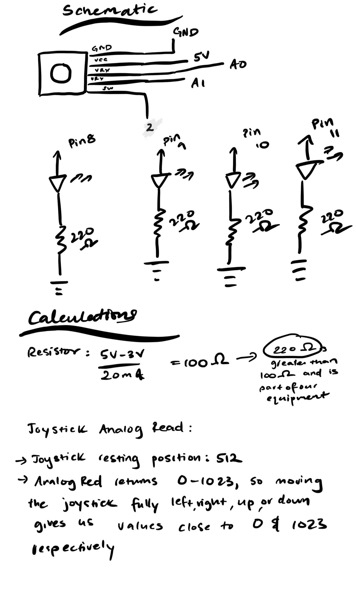

Talking to the web!
Take a look at my Talking to the web! circuit!

Code Snippet js.
const BAUD_RATE = 9600; //measures how many times signal changes state per second
const MIN_DIAMETER = 10; //min diameter
const MAX_DIAMETER = 40; //max diameter
let port, connectBtn, blinkBtn; // declare global variables
let joystickDirection = ""; // variable to store joystick direction
function setup() { //setup
setupSerial(); // run our serial setup function
createCanvas(windowWidth, windowHeight); // create a canvas that is the size of our browser window.
blinkBtn = createButton("Blink LEDs"); // create a "Blink" button
blinkBtn.position(150, 5); // position the button to the right of the connect button.
blinkBtn.mouseClicked(onBlinkButtonClicked); // When the button is clicked, run the onBlinkButtonClicked function
}
function draw() {//draw function
const portIsOpen = checkPort(); // Check whether the port is open
if (!portIsOpen) return; // If the port is not open, exit the draw loop
let str = port.readUntil("\n"); // Read from the port until the newline
if (str.length == 0) return; // If we didn't read anything, return.
// Check if the string is the joystick direction
if (str.includes("UP")) { //if you get up from arduino
joystickDirection = "UP"; //that is the joystick direction
} else if (str.includes("DOWN")) {//if you get down from arduino
joystickDirection = "DOWN";//that is the joystick direction
} else if (str.includes("LEFT")) {//if you get left from arduino
joystickDirection = "LEFT";//that is the joystick direction
} else if (str.includes("RIGHT")) {//if you get right from arduino
joystickDirection = "RIGHT";//that is the joystick direction
}
console.log(str); //makes it a string
// Display the joystick direction on the canvas
background(200); //sets background color
textSize(32); //sets size of text
textAlign(CENTER, CENTER); //aligns text
text(joystickDirection, width / 2, height / 2); //sets size of text
}
function setupSerial() { //manages serial connection
port = createSerial(); //creates serial port
let usedPorts = usedSerialPorts(); //says what ports are in use
if (usedPorts.length > 0) { //needs there to be more than 0 user ports
port.open(usedPorts[0], BAUD_RATE); //to open
}
// create a connect button
connectBtn = createButton("Connect to Arduino"); //connects port to arduino
connectBtn.position(5, 5); //places button on screen
connectBtn.mouseClicked(onConnectButtonClicked); // When the button is clicked, run the onConnectButtonClicked function
}
function checkPort() { //checks the port
if (!port.opened()) { //if port is not opened
connectBtn.html("Connect to Arduino"); //then allows for connect to arduino
background("gray"); //sets background color
return false; // returns false
} else { //if port is opened
connectBtn.html("Disconnect"); //allows for disconnect
return true; //returns true
}
}
function onConnectButtonClicked() { //if button is clicked
if (!port.opened()) { //port is not opened
port.open(BAUD_RATE); //opens port
} else { //or else
port.close(); //closes port
}
}
function onBlinkButtonClicked() { // Send the "BLINK" command to Arduino
if (port.opened()) { //if port is opened
port.write("BLINK\n"); //write to blink
}
}
Code Snippet Arduino
const int SW_pin = 2; // Joystick button
const int X_pin = A0; // Joystick X-axis
const int Y_pin = A1; // Joystick Y-axis
#define UP_LED 8 // define the up led
#define RIGHT_LED 9 // define the right led
#define LEFT_LED 10// define the left led
#define DOWN_LED 11// define the down led
void setup() { //setup
pinMode(SW_pin, INPUT_PULLUP); //sets sw pin to input
Serial.begin(9600); // Match baud rate with p5.js
pinMode(UP_LED, OUTPUT); //sets all leds as output
pinMode(RIGHT_LED, OUTPUT);//sets all leds as output
pinMode(LEFT_LED, OUTPUT);//sets all leds as output
pinMode(DOWN_LED, OUTPUT);//sets all leds as output
}
void loop() { //loop
int xValue = analogRead(X_pin); //sets value of x with pin
int yValue = analogRead(Y_pin);//sets value of y with pin
int buttonState = digitalRead(SW_pin);//sets value of sw pin with button state
if (Serial.available()) { // Read serial input from p5.js
String command = Serial.readStringUntil('\n'); // Read command
command.trim(); // Remove whitespace
if (command == "BLINK") { //if the command is to blink
blinkLeds();//blink the leds with the function
}
}
const int centerThreshold = 512; // Joystick direction detection
const int deadzone = 100; // Joystick direction detection
if (yValue > centerThreshold + deadzone) { //sees if joystick goes up
Serial.println("UP"); //prints up
digitalWrite(UP_LED, HIGH); //led on
} else if (yValue < centerThreshold - deadzone) { //if its for down
Serial.println("DOWN"); //prints down
digitalWrite(DOWN_LED, HIGH);//led on
} else if (xValue > centerThreshold + deadzone) {//if its for right
Serial.println("RIGHT");//prints right
digitalWrite(RIGHT_LED, HIGH);//led on
} else if (xValue < centerThreshold - deadzone) {//if its for left
Serial.println("LEFT");//prints left
digitalWrite(LEFT_LED, HIGH);//led on
} else { //else
digitalWrite(UP_LED, LOW); //led off
digitalWrite(DOWN_LED, LOW);//led off
digitalWrite(LEFT_LED, LOW);//led off
digitalWrite(RIGHT_LED, LOW);//led off
}
}
// Function to blink all LEDs once
void blinkLeds() { //blink leds function
digitalWrite(UP_LED, HIGH); //led on
digitalWrite(RIGHT_LED, HIGH);//led on
digitalWrite(LEFT_LED, HIGH);//led on
digitalWrite(DOWN_LED, HIGH);//led on
delay(200);//delay
digitalWrite(UP_LED, LOW);//led off
digitalWrite(RIGHT_LED, LOW);//led off
digitalWrite(LEFT_LED, LOW);//led off
digitalWrite(DOWN_LED, LOW);//led off
}
Schematics and Calculations
This is the schematic for the circuit.